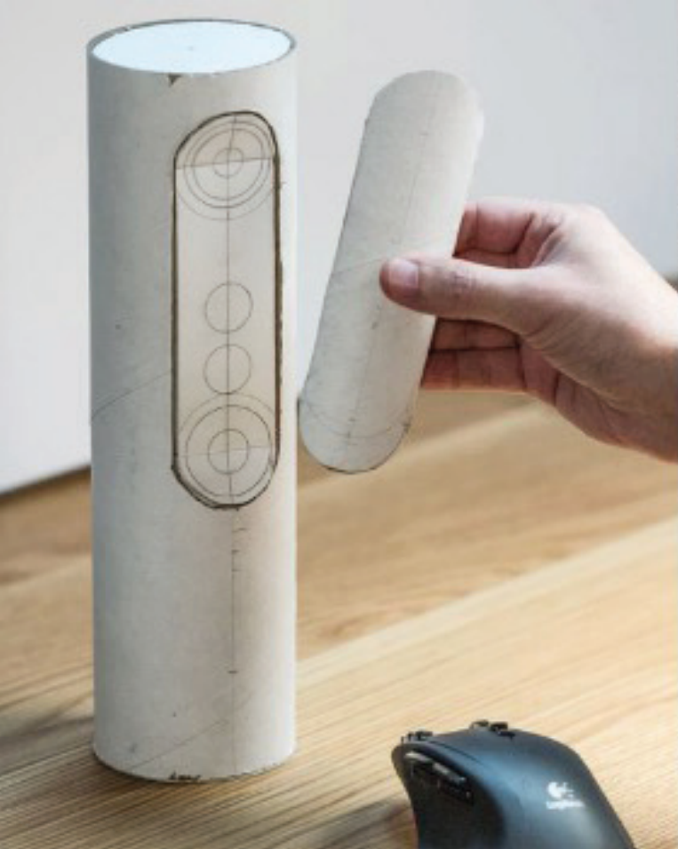
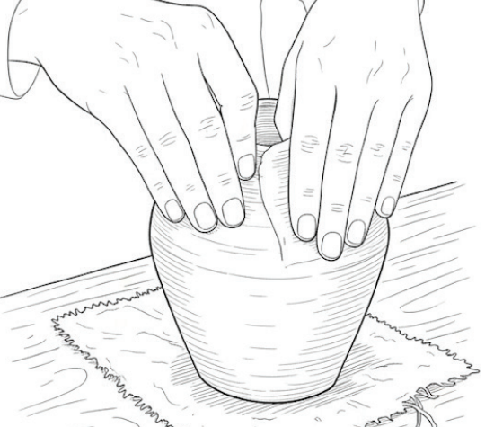

Varierte og praktiske oppgaver
Du lærer å bygge modeller og lage prototyper av egne design
Du får kunnskap om ulike materialer og teknikker
Design
Rask oversikt
Dette lærer du
- Bruke ulike materialer og teknikker i produktutvikling
- Utvikle ideer gjennom idéteknikker, skisser, modeller og prototyper, både fysisk og digitalt
- Laserkutting og Adobeprogrammene
- Sy og bruke ulike verktøy
- Du får større bevissthet rundt hvordan design kan bidra til og påvirkes av bærekraftig utvikling
- Kunnskap og forståelse for prosesser som ligger bak ulike designløsninger
- Problemløsning
Dette gjør vi
- Realiserer egne ideer
- Utvikler bærekraftige designløsninger
- Bruker ulike materialer og teknikker i produktutvikling
- Lager prototyper og jobber praktisk
- Designer visuelle konsepter
Faget er nyttig fordi
- Fokus på bærekraftig design er aktuelt
- Du lærer fremtidstenkning og problemløsing
- Du kan bruke arbeid fra dette faget i en portfolio til videre søking på designhøyskoler
- I faget design og bærekraft utforsker vi mange sider ved designfaget

